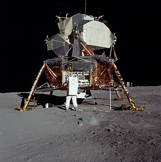

Экспедиция на Лунный полюс
Кратер Тихо - база будущего
Лунные пейзажи поражают своими космическими масштабами и первозданной тишиной

Море Спокойствия - исторический след
Уникальные ландшафты и знаменитые следы первых астронавтов делают эту локацию легендарной